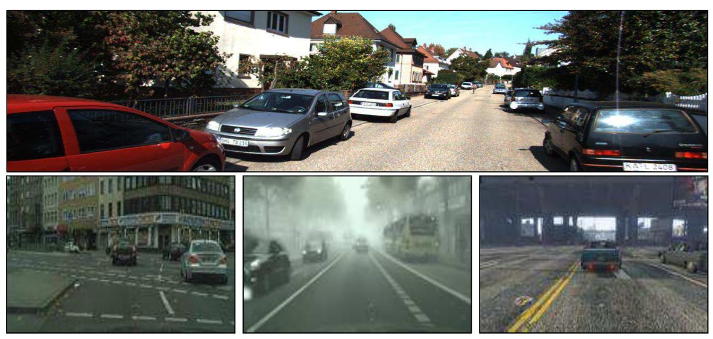
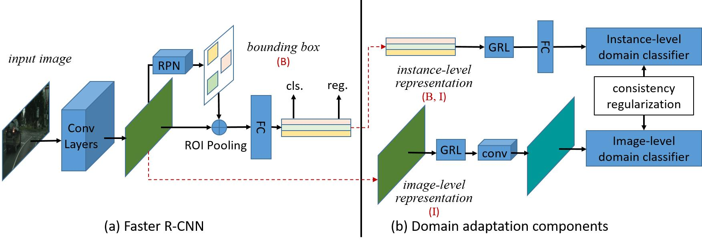
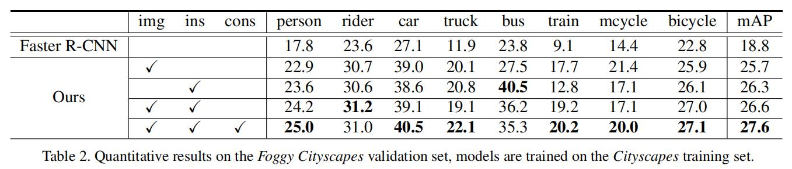

域适应：DA Faster R-CNN¶
综述¶
会议时间：IEEE Conference on Computer Vision and Pattern Recognition 2018 (CVPR, 2018)
源码地址：https://github.com/yuhuayc/da-faster-rcnn（caffe）、https://github.com/krumo/Domain-Adaptive-Faster-RCNN-PyTorch（PyTorch）
针对领域：域适应目标检测
主要思想¶
现实世界中的目标检测容易面临来自视点、目标外观、背景、光照、图像质量等方面的巨大差异，可能会导致训练数据和测试数据之间相当大的领域偏移，下图选取了自动驾驶中几个常用的数据集图片，从中可以发现，不同的数据集之间因为城市的背景、天气情况以及车辆形状等因素会产生相当大的领域偏移问题，针对这一问题，作者开发了一种跨域目标检测算法，可以使模型适应视觉上不同于训练集数据领域的新领域，如利用晴天数据集训练的模型也可以很好地应用到雾天的目标检测。

作者设计了一种基于Faster R-CNN的领域自适应Faster R-CNN算法(Domain Adaptive Faster R-CNN)，基于协变量偏移假设(covariate shift assumption)，域偏移可能发生在图像级别水平(如图像尺度、图像风格等)以及实例级别水平(如物体出现的尺寸)。为了解决领域偏差问题，作者设计了图像级水平自适应组件和实例级水平自适应组件，并且将其嵌入到Faster R-CNN中，从而实现最小化两个领域之间的\mathcal H散度的目的。在每个组件中，作者训练了一个领域分类器，使用对抗策略来学习领域不变的特征，并且进一步在不同层次的领域分类器之间引入一致性正则化，从而让Faster R-CNN学习到一个域不变的区域提议模块(RPN)。
本文的贡献可以总结为：
- 从概率的视觉对领域偏移问题做了一个分析；
- 设计了两个自适应组件来分别缓解图像和实例级别的领域差异所产生的问题；
- 设计了一致性正则化器来鼓励RPN网络具有领域不变性；
- 将提出的组件集成到Faster R-CNN中，并且以端到端的方式进行训练。
方法¶
预备内容¶
Faster R-CNN¶
本文中使用的基线检测模型为Faster R-CNN，该网络是一个二阶段检测器，主要由三个部件组成：特征提取网络(底层卷积层)、区域提议网络(RPN)、基于感兴趣区域的分类模块(ROI)，网络结构如下图左侧所示。
首先输入的图片先经过特征提取网络提取特征，之后将得到的特征图传入RPN模块生成对应的物体提议，最后ROI模块利用感兴趣的区域进行物体类别预测，训练损失由RPN模块的损失和ROI模块的损失构成：

利用H散度的分布对齐¶
\mathcal H散度用于衡量两个样本分布之间的离散程度，假设一个特征向量表示为x，源域的样本表示为x_{\mathcal S}，目标域的样本表示为x_{\mathcal T}，利用h:x\rightarrow{0,1}表示域分类器，对于源域数据x_{\mathcal S}期望预测为0，对于目标域数据x_{\mathcal T}期望预测为1。假设\mathcal H为所有可能的域分类器集合(即分类器h的范围)，则\mathcal H散度可以表示为：
注：这也正是我们在域适应任务中所期望的，对齐两个领域之间的特征数据，使其难以区分，因此有两个任务：得到好的域分类器、并且让CNN产生上述域分类器难以鉴别领域归属的特征，需要以相反的方式优化域分类器和CNN，因此需要利用对抗训练策略。（注意理清逻辑关系）
深度神经网络中，特征向量x通常表示为一层网络后的激活，假设产生向量x的网络为f，为了对齐两个领域的特征，需要强制网络f输出最小化领域距离d_{\mathcal H}(\mathcal S,\mathcal T)的特征向量，即：
举个例子来说，当利用晴天数据训练模型时，输入一张雾天数据，由于网络没有见过雾天的数据集，因此存在训练数据与测试数据之间的领域偏移，他会认为雾天的数据与晴天的数据内容完全不同(极端情况下)，因此会产生一个与晴天数据完全不同的特征向量，限制了RPN和ROI的预测。但实际上雾天数据与晴天数据所蕴含的信息一样，待检测目标也一样，只是数据分布有所差异，因此我们期望网络能够平等对待两种数据，对于雾天数据能产生与晴天数据相同的特征分布，这样才便于后续对目标位置和类别的预测。
用于目标检测的域适应¶
遵循一般的域适应术语，将训练数据称为源域数据\mathcal S，测试数据称为目标域数据\mathcal T。训练过程中，对于源域数据有目标框坐标、物体类别、领域标签等信息，而对于目标域数据仅有领域标签。
概率视角¶
物体检测问题可以视为学习一个后验概率P(C,B|I)，其中I表示图片表征(特征图)，B表示物体坐标框，C\in\{1,\dots,K\}表示物体类别，其中K为类别总数。
假设目标检测中训练样本的联合分布为P(C,B,I)，使用P_{\mathcal S}(C,B,I)以及P_{\mathcal T}(C,B,I)分别表示源域联合分布和目标域联合分布(目标域中C,B未知)。当存在领域偏移时P_{\mathcal S}(C,B,I)\neq P_{\mathcal T}(C,B,I)。
图像级别的领域适应：使用贝叶斯公式，联合分布可以表示为：
实例级别的自适应：另一方面，联合分布也可以分解为：
这里，实例表征(B,I)是指从每个实例的地面真实边界框中图像区域提取的特征。虽然目标域中没有真实边界框标签，但是可以通过如下公式来获得：
联合自适应：理想情况下，可以实现图像级别和实例级别的领域对齐，考虑到P(B,I)=P(B|I)P(I)，并且两个域的条件分布P(B|I)假设相同且非零，有如下公式成立：
换句话说，如果图像级表征的分布在两个域之间相同，则实例级表征也在两个域之间相同。然而，完美地估计条件分布P(B|I)是不太现实的，即RPN模块不能完美地预测边界框，原因如下：①实践中，可能很难完美地对齐边界分布P(I)，因此用于估计的P(B|I)在某种程度上是存在偏差的；②物体边界框信息仅在源域数据可用，因此P(B|I)仅能使用源域数据来学习，很容易让其偏向源域数据。
因此，作者建议同时在图像级和实例级水平上实行领域分布对齐，并且应用一致性正则化器来减轻估计P(B|I)的偏差。为了对齐两个域的分布，需要训练一个域分类器h(x)。在目标检测中，x可以是图像级别的表征I，也可以是实例级别的表征(B,I)。从概率的角度来看，h(x)可以看作是估计样本x属于目标域的概率。
因此，通过将域标签表示为D，图像级域分类器可以被视为估计P(D|I)，实例级域分类器可以被视为估计P(D|B,I)，通过贝叶斯定理，可以得到：
域适应组件¶
两个域适应组件如下图右侧所示
图像级别的自适应：在Faster R-CNN模型中，图像级别的表示是指基本卷积层的特征输出(如上图中的绿色四边形)。为了消除图像级别的域分布不匹配，我们使用一个基于补丁(patch)的域分类器，如上图右下方所示。
特别的，我们从特征图的每个激活值训练域分类器，因为每个激活值的感受野对应于输入图像的一个图片补丁I_i，因此域分类器实际上预测每个图像补丁的域标签，具体实现方法可见源码笔记。
图像级自适应的构建有如下两个好处：①对齐图像级表征有利于减少由全局图像差异引起的领域偏移(如图像风格、图像比例、照明等等)；②由于使用高分辨率输入，因此目标检测网络的训练过程中，batch size设置的通常很小，这种基于补丁的设计有助于增加训练领域分类器的训练样本数量。
假设第i个训练图片的域标签表示为D_i，对于源域图片D_i=0，对于目标域图片D_i=1。第i张图得到的特征图的激活表示为\phi(I_i)，并且特征图上位于(u,v)上的激活表示为\phi_{u,v}(I_i)，将域分类器的输出表示为p_i^{(u,v)}，并且分类损失利用交叉熵损失，即图像级自适应损失可以表示为：
实例级别的自适应：实例级水平表征是指在输入最终类别分类器之前的基于感兴趣区域的特征向量，以Faster R-CNN为例，即ROI Pooling之后的特征，如上图中，FC层后面的矩形。对齐实例级特征表示有利于降低局部实例的差异，如对象外观、大小、视点等等。假设第i张图像中第j个区域的实例级域分类器输出为p_{i,j}，实例级自适应损失可以表示为：
一致性正则化器：如上文分析的，强制两个在不同水平上的域分类器具有一致性可以帮助边界框预测器学习跨域鲁棒性(如Faster R-CNN中的RPN模块)，因此作者进一步构建了一致性正则化器来约束网络。因为图像级水平域分类器为图像级水平表征I的每个激活点都提供一个输出，即输出一张领域对齐图，因此作者将图像中所有位置的预测概率求一个平均值作为图像级预测概率，一致性正则化器可以表示为：
网络损失¶
网络结构如上图所示，作者使用了领域自适应模块来扩充Faster R-CNN，在原有的网络结构上新引进了三个网络组件。图像级水平领域分类器被添加到最后一层卷积之后，实例级水平领域分类器被添加到感兴趣的区域特征之后(ROI Pooling之后)，两个分类器通过一致性损失联系在一起，从而鼓励RPN具有领域不变性，网络最终的损失如下：
mAP对比¶
Cityscape \rightarrow FoggyCityscape

总结¶
本文提出了一种有效解决跨域目标检测问题的域适应Faster R-CNN算法，可以实现在不使用任何附加标记数据的情况下获得新领域鲁棒性的检测器。作者在对跨域目标检测理论分析的基础上，提出了一个图像级自适应组件和实例级自适应组件来缓解由域偏移引起的模型性能下降的问题，两个组件的训练都是基于\mathcal H散度的对抗性训练的，并且作者还设计了一个一致性正则化器，用于进一步学习一个域不变的RPN组件。
注：以上内容仅是笔者个人见解，若有错误，欢迎大家批评指正
最后一次修改日期：2022年1月28日